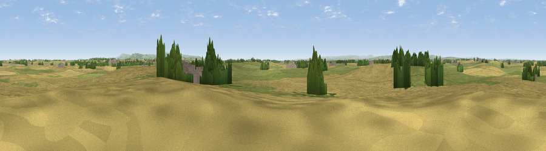

Hunter’s Hill
#24793 in England · top 70% of its area beats it · near Danby WiskeThe view, rendered

A 360° render of this exact spot computed from the terrain model, tree cover and land cover — summer colours, afternoon light, calibrated against photographs of famous viewpoints. Real trees, hedges and buildings will differ in detail.
The panorama
Grey silhouette: terrain skyline in each direction (720 bearings, Earth curvature and refraction included). Dashed green: skyline with trees (+15 m) and buildings (+8 m) as obstacles. Blue strip: how far the ground is visible on each bearing.
Where the view opens
Wedge length = distance to the farthest visible ground on that bearing (vegetation-aware). Rings at 10, 25 and 50 km.
What fills the view
58% cropland · 36% grassland · 5% woodland ·
Angular shares of the visible panorama (visual magnitude), not map area. Landscape diversity 0.38 (0–1 Shannon).
Key numbers
More beautiful places nearby
The staircase of upgrades: each row has a higher view potential than everything closer. Driving times are estimates from straight-line distance, calibrated against real road routing — check an actual route before setting out.
| Place | Direction | Drive | Score |
|---|---|---|---|
| Viewpoint near Brompton | ESE · 7 km | ~15 min | 65.7 |
| Viewpoint near Over Silton | ESE · 11 km | ~22 min | 74.5 |
| Bonfire Hill [Landmoth Hill] | SE · 12 km | ~23 min | 74.7 |
| Viewpoint near Ingleby Cross | E · 13 km | ~24 min | 76.5 |
| Viewpoint near Ingleby Cross | E · 13 km | ~24 min | 78.8 |
| Beacon Hill | E · 13 km | ~25 min | 84.7 |
| Carlton Bank | E · 20 km | ~33 min | 85.1 |
| Roseberry Topping | ENE · 29 km | ~45 min | 85.8 |
54.39037, -1.50179 · source: osm peak · position refined by local search. Computed location — check access rights before visiting.